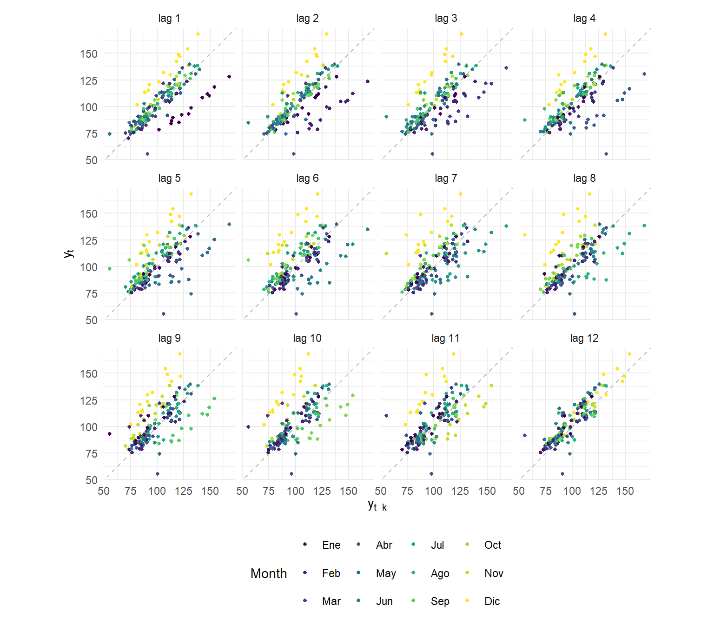
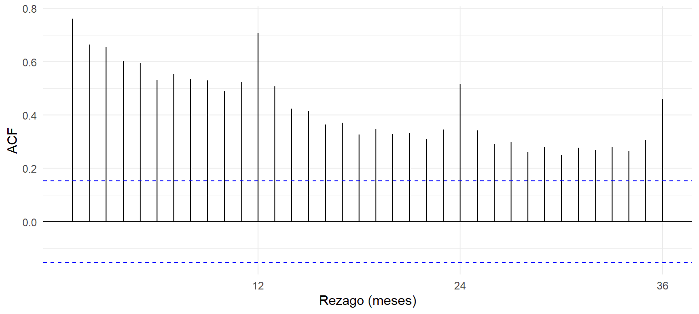
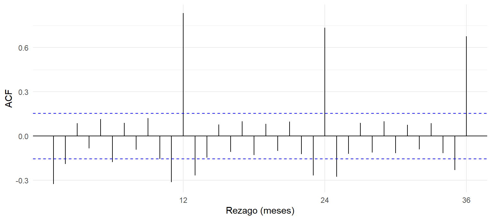
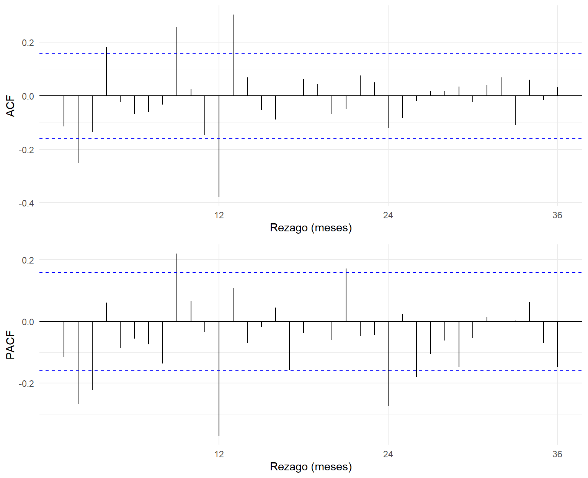

Capítulo 4 Aproximación por rezagos
4.1 Idea
El rezago de orden \(k\) de una serie es la misma serie desplazada \(k\) periodos: \(y_{t-k}\). Comparar \(y_t\) con sus rezagos dice cuánta memoria tiene la serie, es decir, cuánto se parece el índice de un mes al de uno, dos o doce meses antes. Esta relación se mide con la función de autocorrelación (ACF):
\[\begin{equation} r_k = \frac{\sum_{t=k+1}^{T} (y_t - \bar{y})(y_{t-k} - \bar{y})}{\sum_{t=1}^{T} (y_t - \bar{y})^2}. \tag{4.1} \end{equation}\]
La autocorrelación parcial (PACF) mide la relación entre \(y_t\) y \(y_{t-k}\) una vez descontado el efecto de los rezagos intermedios. Las dos funciones se usan juntas para identificar modelos ARIMA en la siguiente unidad.
4.2 Gráficos de rezagos
gglagplot(y, lags = 12, do.lines = FALSE, colour = TRUE) +
scale_colour_viridis_d(labels = meses) +
labs(x = expression(y[t-k]), y = expression(y[t]), colour = "Mes") +
theme(legend.position = "bottom")
Figura 4.1: Gráficos de rezagos: índice del mes \(t\) (eje vertical) frente al índice del mes \(t-k\) (eje horizontal), para \(k = 1, \dots, 12\). Los colores identifican el mes.
En la Figura 4.1, si los puntos caen cerca de la diagonal, el índice se parece al de \(k\) meses antes. Se observan dos cosas:
- En los rezagos 1 a 11 los puntos se ordenan en una banda positiva, por efecto de la tendencia. Pero la banda se abre por mes: los puntos de diciembre (amarillos) quedan siempre por encima, porque diciembre vende más que el mes con el que se compara.
- En el rezago 12 los puntos se ordenan casi sobre una línea. Cada mes se compara con el mismo mes del año anterior, y la diferencia estacional desaparece. Es la evidencia gráfica más directa de la estacionalidad anual.
4.3 Autocorrelación de la serie en niveles

Figura 4.2: ACF de la serie original hasta el rezago 36. Las líneas punteadas son las bandas de significancia al 95 %.
La ACF de la Figura 4.2 decrece lentamente: \(r_1 =\) 0,76 y sigue siendo significativa hasta el rezago 36. Ese descenso lento es típico de una serie con tendencia, es decir, no estacionaria en media. Sobre ese descenso se ven picos en los rezagos 12, 24 y 36 (\(r_{12} =\) 0,71, \(r_{24} =\) 0,52), que son la huella de la estacionalidad.
4.4 Autocorrelación de la serie diferenciada
Para retirar la tendencia se toma la primera diferencia, \(\Delta y_t = y_t - y_{t-1}\):

Figura 4.3: ACF de la primera diferencia de la serie.
Sin la tendencia, la estacionalidad domina (Figura 4.3). La autocorrelación en el rezago 12 es 0,83, y vuelve a ser alta en los rezagos 24 y 36. La variación de un mes respecto al anterior se repite casi igual cada año: el salto de noviembre a diciembre es grande y positivo, y el de diciembre a enero, grande y negativo.
4.5 Diferencia estacional y orden de diferenciación
d <- ndiffs(y) # diferencias regulares sugeridas (prueba KPSS)
D <- nsdiffs(y) # diferencias estacionales sugeridas (fuerza estacional)
z <- diff(diff(log(y), lag = 12)) # logaritmo, diferencia estacional y regularLas pruebas automáticas de forecast sugieren 1 diferencia regular y 1 diferencia estacional. Se trabaja con el logaritmo porque la amplitud estacional crece con el nivel: así, la diferencia \(\Delta_{12} \log y_t\) se interpreta aproximadamente como la tasa de crecimiento anual.
gridExtra::grid.arrange(
ggAcf(z, lag.max = 36) + labs(title = NULL, x = "Rezago (meses)", y = "ACF"),
ggPacf(z, lag.max = 36) + labs(title = NULL, x = "Rezago (meses)", y = "PACF"),
ncol = 1
)
Figura 4.4: ACF y PACF de la serie transformada \(\Delta\Delta_{12}\log y_t\).
Tras las dos diferencias (Figura 4.4), la mayoría de autocorrelaciones queda dentro de la banda de ±0,16. Sobresale el rezago 12, con \(r_{12} =\) -0,38 en la ACF. En la PACF, el valor en el rezago 12 (-0,37) se repite atenuado en el 24 (-0,27). Un pico negativo en el rezago estacional de la ACF, con una PACF que decae en los múltiplos de 12, es la firma de un componente media móvil estacional. El valor positivo en el rezago 13 (\(r_{13} =\) 0,30) es la interacción esperada entre ese componente y la parte no estacional.
También superan la banda los rezagos 2 (\(r_2 =\) -0,25) y 9 (\(r_9 =\) 0,26). Esto sugiere que la parte no estacional necesita algún término adicional. En conjunto, el patrón apunta a un modelo de la familia SARIMA\((p,1,q)(0,1,1)_{12}\), cuyo caso más simple es el modelo de aerolínea, \((0,1,1)(0,1,1)_{12}\). Los órdenes \(p\) y \(q\) se elegirán en la siguiente unidad con criterios de información y con el análisis de los residuos.
| Rezago | Serie original | Primera diferencia | Δ Δ12 log |
|---|---|---|---|
| 1 | 0,761 | -0,324 | -0,115 |
| 2 | 0,665 | -0,189 | -0,252 |
| 3 | 0,655 | 0,088 | -0,137 |
| 6 | 0,530 | -0,176 | -0,068 |
| 12 | 0,706 | 0,833 | -0,378 |
| 24 | 0,515 | 0,733 | -0,121 |
La prueba de Ljung-Box confirma la lectura. Sobre la serie original, el estadístico con 24 rezagos es \(Q =\) 1.083,7 (valor p < 0,001): hay mucha estructura por modelar. En la serie transformada baja a \(Q =\) 84,4 (valor p < 0,001). Aunque las diferencias retiran la mayor parte de la dependencia, la correlación remanente en el rezago 12 todavía es significativa. Esa correlación es la que deberá recoger el componente estacional del modelo.